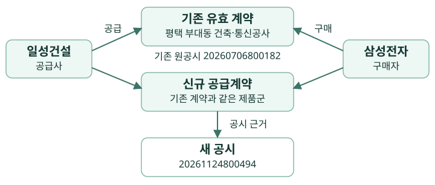
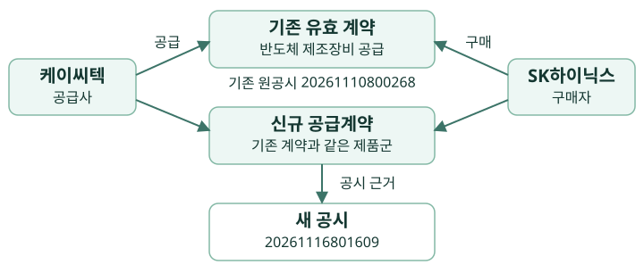

CLEAR와 TRACE — OpenDART 공시를 활용한 매매 전략 비교
초록. 본 연구는 공개 당시 유효한 공급계약을 근거로 OpenDART 공시를 선별하고, 그 신호로 주식 보유와 현금 전환을 결정하는 CLEAR를 제안한다. 국내 주식 하락장 백테스트에서 CLEAR를 공시 원문의 구매자만 확인하는 방식, 가격 추세, 과거 공시 경로에서 방향 규칙을 학습하는 TRACE와 비교하였다. 공통으로 공시 후보가 있었던 종목에서 CLEAR는 구매자만 확인한 방식과 가격 추세보다 손실 폭이 작았으며, TRACE의 합산 손실 폭이 가장 작았다. 가격 추세만 따랐을 때와 비교하면, CLEAR의 공시 기반 추가 매수는 삼성전자에서 손실을 키웠고 SK하이닉스에서는 손실을 줄였다. TRACE는 삼성전기의 공급계약 공시를 하락 신호로 해석해 매도를 앞당겼으며, 이 거래가 7종목 합산 성과 차이에 가장 크게 기여하였다. 비교 대상 7종목과 CLEAR의 최종 공시 선별 조건은 평가 기간의 공시를 검토한 뒤 확정하였다. 다른 기간에도 같은 결과가 나오는지는 별도 검증이 필요하다.
1. 서론
본 연구는 공급사 공시를 매매에 반영할 때, 과거 공급계약을 함께 확인하면 공시 채택과 주문이 어떻게 달라지는지 분석하였다. 이를 위해 CLEAR와 원문 구매자만 확인한 전략의 공시 부호와 체결 규칙을 통일하였다. 가격 추세는 공시 신호를 사용했을 때의 차이를 확인하기 위한 기준선으로 두었으며, TRACE는 같은 체결 조건에서 규칙 채굴 방식의 성과를 비교하는 데 사용하였다.
2. 관련 연구
2.1 공급계약 공시와 기업 간 정보 전달
공급계약 공시를 매매에 활용하려면 공시를 낸 기업의 주가 반응과 거래 상대에게 전달되는 정보를 구분해야 한다. 우민철과 박수철(2017)은 국내 단일판매·공급계약 공시에서 공시 당일 초과수익률이 양수였고 다음 날에는 반전이 나타났다고 보고하였다. 공시 당일의 반응이 공개 이후에 진입하는 전략에서도 이어지는지는 별도로 검토해야 한다. 우민철·박수철(2017), 경영연구 32(1), 초록
Cohen과 Frazzini(2008)는 미국 기업의 주요 고객 공시로 거래 관계를 식별하고, 고객의 전월 수익률을 기준으로 공급기업 포트폴리오를 구성하였다. 고객 주가에 반영된 정보가 공급기업 주가에 지연 반영되는 양상을 보고하였다. 본 연구는 공급사가 낸 계약 공시를 출발점으로, 공시에 명시된 구매자와 당시 유효한 계약을 대조한다. 이 비교의 관측 단위는 월별 고객 수익률이 아니라 공개 시점과 접수번호를 확인할 수 있는 개별 공시이다. Cohen과 Frazzini(2008), Journal of Finance 63(4), II–III절
2.2 금융 문서에서 신호와 근거를 얻는 방법
김용석과 조성욱(2019)은 국내 증권발행신고서의 투자위험 문장에 나이브 베이즈 분류를 적용하여 공시의 어조를 측정하였다. 공모가격 변화와 어조 사이에는 관계가 있었으나 상장 직후 수익률과의 유의한 관계는 확인하지 못하였다. 정남주 외(2026)는 삼성전자 관련 뉴스의 영향을 증권사 보고서에 근거해 점수화하고, 금융 변수에 더했을 때 단기 수익률 예측 성능이 개선되었다고 보고하였다. 본 연구에서는 계약 당사자와 정정 내용을 구조화하여 공시가 실제 매수·매도 주문을 바꿨는지, 그 주문의 비용 후 손익이 어떠했는지를 평가한다. 김용석·조성욱(2019), 한국증권학회지 48(2) · 정남주 외(2026), ASK 2026, 3–5절
Ding 외(2026)의 TRACE는 과거 주가 방향과 함께 나타난 관계 경로를 규칙으로 채굴하고, 공개 시점을 반영한 금융 지식그래프에서 해당 규칙과 일치하는 경로를 빔 탐색으로 찾는다. 논문은 미국 주식에서 방향 예측을 평가하고, 별도 백테스트에서 전략별 상위 10종목을 선정해 보유하였다. 본 연구의 TRACE 구현은 규칙 채굴과 경로 탐색을 OpenDART에 적용한다. 공시 근거는 구조화된 접수번호 연결로 확인하고, CLEAR와 같은 주문 규칙을 사용하여 지정된 종목의 보유 상태를 바꾼다. Ding 외(2026), TRACE, 3.3–3.5절·5.5절·부록 A와 C
2.3 가격 추세와 비교 기준
Moskowitz 외(2012)는 주가지수·통화·상품·채권 선물에서 자산 자체의 과거 수익률과 이후 수익률 사이의 추세 지속을 분석하였다. 대표 전략은 직전 12개월 초과수익률의 부호로 매수·매도 방향을 정한다. 본 연구는 개별 종목의 직전 20거래일 가격 변화로 주식과 현금 사이를 전환하는 기준선을 사용하였다. 매수 후 보유는 하락장에서 시장 노출을 줄였을 때의 차이를 보여주며, 가격 추세는 공시를 반영한 전략과 가격만 사용한 전략을 비교하는 기준이다. Moskowitz 외(2012), Journal of Financial Economics 104(2), 4절
3. 데이터와 지식그래프 구축
그래프는 두 질문에서 출발하였다. 누가 누구에게 무엇을 공급하기로 했는가? 그리고 매매 시점까지 어떤 계약 조건이 공개되어 있었는가? 이를 답하기 위해 기업, 공급계약, 공시를 각각 노드로 두고, 기업이 계약에서 맡는 공급자·구매자 역할을 관계로 표현하였다. 한 기업 쌍에 여러 계약이 있을 수 있으므로 계약별로 원문과 정정 이력을 연결하였다. 경제 사건 온톨로지 정의서
- OpenDART 수집
공시 목록과 원문 ZIP을 S3에 보관한다. - EC2 전처리
원문 XML 표에서 당사자·품목·금액·기간을 읽고, 법인과 정정 공시를 식별한다. - Neo4j 적재
기업·계약·공시를 연결하고 원문 접수번호와 공개일을 남긴다. - 백테스트 활용
그래프를 내보내 CLEAR의 공시 선별과 TRACE의 경로 탐색에 사용한다.
구현에 사용한 LPG(Labelled Property Graph, 레이블 속성 그래프)는 노드에 유형을 붙이고, 유형이 있는 관계로 노드를 연결하며, 노드와 관계에 속성을 둘 수 있는 모델이다. 예를 들어 넥스틴과 SK하이닉스는 기업 노드이고, 웨이퍼 검사장비 공급계약은 계약 노드이다. 두 기업은 공급자와 구매자 역할로 계약에 연결된다. 계약금액·유효 기간과 원문 접수번호를 따라가면 거래 관계를 어떤 공시로 확인했는지 알 수 있다.

OWL(Web Ontology Language)은 개념의 계층과 관계의 의미를 정의해 상위 유형을 추론하는 데 쓴다. 예를 들어 별도의 최대주주 변경 실험에서 합병 ⊑ 기업구조재편을 정의하면, 합병으로 기록된 사건을 기업구조재편 질의에서도 찾을 수 있다. 이 매매 실험에서는 Neo4j LPG에서 내보낸 사실을 사용하였다. CLEAR는 기존 공급계약의 유효성을 검사하고, TRACE는 공개된 관계를 따라 공시 근거를 찾는다. 별도 LPG·OWL 비교 실험
공시 접수일과 계약 유효 기간은 따로 기록하였다. 그래프 조회에는 그때까지 공개된 계약 조건만 사용하고, 접수일만 확인한 공시는 다음 거래일 시가부터 신호에 반영하였다. 최초 실행 후 두 전략 모두 공시 후보가 있었던 7종목을 추려 성과와 공시·주문 집계를 제시하였다.
4. 방법론
CLEAR와 TRACE는 같은 OpenDART 공급계약 자료를 사용한다. CLEAR는 공시를 구매자 종목에 반영할 근거를 기존 계약에서 찾고, TRACE는 공시까지 이어지는 경로에서 과거에 학습한 방향 규칙을 찾는다. 각 방법이 만든 신호는 같은 주문 규칙에 입력한다.
CLEAR
- 확인할 경로 공급사 → 기존 유효 계약 → 새 공시에 명시된 구매자
- 신호 구매자를 확인할 수 없어 공시를 채택하지 않았다. 5거래일 합계는 0이었다.
- 10월 7일 시가 가격 추세가 보유를 지시하여 기존 주식을 유지하였다.
TRACE
- 확인한 경로 삼성전기 → 공급사 신규 계약 사건 → 원문 공시
- 신호 학습 표본 82건 중 50건이 하락하였다. 신뢰도 61.0%로 하락 규칙을 채택해 합계가 −1이 되었다.
- 10월 7일 시가 가격 추세는 같았으나 음의 공시 신호가 우선되어 1,675,000원에 매도하였다.
4.1 CLEAR · 기존 계약 확인과 공시 부호
CLEAR(Contract-Link Evidence for Allocation Rules)는 새 공시가 특정 구매자 종목에 관한 신호인지 판정한다. 공시를 채택하는 조건과 채택한 공시의 부호를 정하는 규칙을 각각 둔다.
공급사에서 계약 노드를 거쳐 구매자에 이르는 관계를 회사 간 경제적 1홉으로 정의한다. 새 공시를 평가할 때는 그보다 먼저 공개됐고 당시 유효한 계약만 조회한다. 공급 방향과 제품군이 같아야 하며, 기존 계약금액은 양수이고 두 공시의 접수번호는 달라야 한다. 새 공시에 적힌 구매자와 주문 대상 기업도 일치해야 한다. 당시 공개된 계약 조건이 충돌하면 경로를 제외한다.
종목 i의 거래일 t까지 최근 5거래일에 반영할 수 있는 적격 공시 집합을 Eit로 둔다. CLEAR는 신규 계약과 증액 정정에 +1, 감액 정정에 −1을 부여한다. 금액 변동이 없거나 이전 공개 금액과 비교할 수 없는 정정의 값은 0이다. 공시 e의 부호를 v(e)로 쓰면 종목별 신호는 식 (1)과 같다.
적격 공시가 없거나 신호가 상쇄되면 Sit는 0이 된다. 그때의 보유 상태는 아래 공통 주문 규칙에서 정한다.
공시 선별의 비교 조건
원문 구매자만 확인하는 조건은 새 공시에 명시된 구매자를 사용한다. 양방향 계약 경로는 새 공시를 낸 기업과 기존 유효 계약으로 연결된 거래 상대에게 신호를 전달한다. 방향·제품군 경로에서는 공급사에서 구매자로만 전달하며, 같은 제품군, 양수인 기존 금액, 서로 다른 접수번호를 확인한다. CLEAR는 여기에 새 공시에 적힌 구매자 코드가 주문 대상과 일치해야 한다는 조건을 더한다. 네 조건에는 식 (1)의 공시 부호와 합산 방식을 공통 적용한다.
4.2 TRACE · 경로별 방향 학습과 신호
TRACE는 학습 시점에 공개된 그래프에서 관계 2~4개를 연결해 후보 경로를 구성한다. 같은 경로 유형이 한 종목·거래일에 여러 번 나타나면 한 번만 센다. TRACE가 매매 신호의 부호를 학습할 때는 다음 거래일 종가가 직전 종가보다 높으면 상승, 그 외에는 하락으로 기록한다.
경로 유형 p가 나타난 학습 종목·거래일의 수를 Np, 그중 실제 방향이 y였던 수를 Np,y로 둔다. 방향별 규칙 신뢰도는 식 (2)와 같이 두 수의 비율로 정의한다.
평가 전에 결과가 확인된 학습 사례에서 지지도 Np가 5 이상이고 신뢰도가 0.60 이상인 규칙을 남긴다. 평가 시점에는 그날까지 공개된 그래프에서 규칙의 앞부분과 일치하는 경로만 확장한다. 깊이마다 후보를 최대 8개 유지하고 관계 3개까지 탐색한다.
완성된 규칙은 상승과 하락으로 나누고 각 방향의 최대 신뢰도를 비교한다. 선택한 방향의 근거 경로가 OpenDART 접수번호에 닿으면 상승에 +1, 하락에 −1을 부여한다. 채택한 근거가 없으면 0이다. 거래일 d에 채택한 부호를 uid로 두면, 거래일 t의 합계는 ∑d = t−4t uid이다. 이 합계를 CLEAR의 식 (1)과 같은 주문 규칙에 입력한다.
이 구현의 관계 선택 단계는 후보를 그대로 넘긴다. 근거 검사는 경로가 공시 출처에 닿는지 확인하며, 원문을 다시 읽어 방향을 판정하지는 않는다. 논문은 Qwen으로 원문을 검토하고 평가 시작일에 상위 10종목을 골라 보유하였다. 국내 자료에 적용할 때는 모든 전략에 같은 시가 주문 규칙을 사용하였다. TRACE 원문 부록 A·C
4.3 공통 주문 규칙과 가격 기준선
Ci,d를 종목 i의 거래일 d 종가로 둔다. 20거래일 가격 추세 Mit는 직전 종가가 그보다 20거래일 전 종가보다 높을 때 1이고, 그 외에는 0이다.
두 전략 모두 신호의 합계가 양수면 목표를 주식, 음수면 현금으로 설정한다. 합계가 0이면 식 (3)의 가격 추세가 목표를 정한다. 가격 기준선 가운데 매수 후 보유는 첫 시가부터 마지막 종가까지 보유하고, 20거래일 가격 추세는 식 (3)만 적용한다. 20일 이동평균은 직전 종가가 직전 20거래일 종가 평균보다 높을 때, 5일 평균회귀는 직전 종가가 그보다 5거래일 전 종가보다 낮을 때 보유한다.
목표 보유 상태가 달라지면 시가 O에 주문한다. 편도 비용을 f = 0.001로 두면 매수 수량은 현금 / [O × (1 + f)], 매도 수취액은 수량 × O × (1 − f)이다. 마지막 거래일 종가에 잔여 주식을 청산한 뒤, 종목 계정의 합산 자산 W로 순수익률을 계산한다.
비교 기간과 체결 조건
2026년 10월 1일~11월 26일의 39거래일을 평가하였다. 공통 후보 표본의 각 종목에 같은 초기 자본을 배정하였다. 종목별 자금은 따로 운용하였다. 주식을 사거나 현금으로 돌아갈 때는 시가로 체결하고, 마지막 거래일에 남은 주식은 종가로 매도하였다. 비용은 편도 10bp이며 현금 이자와 배당은 제외하였다. 같은 기간 KOSPI는 −30.86%였다.
5. 공시 기반 매매 전략 비교 결과
5.1 공통 후보 표본의 전략별 성과
CLEAR와 TRACE 모두에서 평가기간에 공시 후보가 확인된 종목은 삼성전자, SK하이닉스, 삼성중공업, HD현대중공업, 현대건설, 삼성물산, 삼성전기였다. 각 종목에 같은 초기 자본을 배정하고, EC2에서 산출한 비용 후 종목별 수익률의 산술평균을 구하였다. 평가 기간은 39거래일이며 왕복 비용 20bp를 적용하였다.
| 전략 | 합산 순수익률 |
|---|---|
| TRACE | −1.92% |
| CLEAR | −4.12% |
| 20거래일 가격 추세 | −4.81% |
| 공급 방향·제품군 확인 | −7.19% |
| 20일 이동평균 | −10.22% |
| 원문 구매자만 확인 | −15.95% |
| 양방향 계약 경로 | −17.41% |
| 5일 평균회귀 | −30.46% |
| 매수 후 보유 | −38.64% |
공통 후보 표본에서는 TRACE, CLEAR, 가격 추세 순으로 손실 폭이 작았다. CLEAR는 같은 체결 규칙을 적용한 원문 구매자 기준보다 순수익률이 높았다. 공통 후보 표본과 CLEAR의 최종 필터는 평가 자료를 본 뒤 정하였다.
5.2 공시가 주문을 바꾼 세 사례
공통 후보 표본에서는 삼성전자와 SK하이닉스의 CLEAR 매수 결과가 서로 달랐고, 삼성전기에서는 TRACE의 조기 매도가 수익률 차이를 만들었다. 각 도해에서 지식그래프의 노드와 관계를 먼저 제시하고, 이어서 신호·주문·손익을 표시하였다. 손익은 해당 신호를 제거한 경우와 비교하였다.
삼성전자 · CLEAR의 추가 진입이 손실을 키웠다. CLEAR는 일성건설에서 기존 평택 건설계약을 거쳐 삼성전자에 이르는 경로를 확인하였다. 기존 계약이 새 공시 전에 공개돼 유효했고, 공급 방향·제품군과 구매자가 일치하였다. 이 검사를 통과한 온양 복지동 공시는 신규 계약이어서 +1을 받았다. 11월 25일 시가에 5거래일 신호 합계는 +1, 가격 추세는 0이었다. CLEAR는 양의 신호를 우선해 목표를 현금에서 주식으로 바꾸었다. 11월 25일 시가 178,500원에 매수했고, 11월 26일 평가 종료 시 종가 171,500원에 매도하였다. 이 공시의 신호를 빼면 비용 후 종목 수익률은 −6.64%에서 −2.63%로 바뀐다. TRACE는 이 종목에서 가격 추세와 같은 주문을 냈다. 일성건설 공시

- 신호 판정온양 공시의 구매자·제품군 일치 → 신규 계약 +1
- 주문 변화11월 25일 시가 178,500원에 매수하고, 11월 26일 종가 171,500원에 매도하였다.
- 비용 후 손익 차이추가 진입으로 종목 수익률 4.00%p 감소
SK하이닉스 · CLEAR의 재진입이 앞선 손실을 일부 만회하였다. CLEAR는 케이씨텍의 새 공시에서 구매자가 SK하이닉스임을 확인하고, 그래프에서 공시 전에 공개돼 당시 유효한 같은 제품군의 반도체 제조장비 계약을 찾았다. 기존 계약은 금액이 양수였고 새 공시와 접수번호가 달랐다. 이 조건을 통과했으므로, 신규 계약의 부호 +1을 SK하이닉스에 반영하였다. 11월 17일 시가에 5거래일 신호 합계는 +1, 가격 추세는 0이었다. CLEAR는 현금에서 주식으로 목표를 바꿔 1,098,000원에 매수하였다. 24일에는 공시가 5거래일 창에서 빠져 합계가 0이 되었다. 가격 추세도 0이어서 시가 1,212,000원에 매도하였다. 이 공시의 신호를 빼면 비용 후 수익률은 −3.88%에서 −12.75%로 낮아진다. TRACE는 같은 기간 가격 추세에 따라 현금을 유지하였다. 케이씨텍 공시

- 신호 판정새 공시의 구매자·제품군 일치 → 신규 계약 +1 → 5거래일 후 만료
- 주문 변화11월 17일 시가 1,098,000원에 매수하고, 11월 24일 시가 1,212,000원에 매도하였다.
- 비용 후 손익 차이추가 진입으로 종목 수익률 8.87%p 증가
삼성전기 · TRACE의 조기 매도가 이후 하락을 피하였다. TRACE는 10월 6일 MLCC 신규 공급계약에서 삼성전기 → 공급사의 신규 계약 사건 → 원문 공시 경로를 찾았다. 이 경로가 나온 학습 표본 82개 중 50개가 하락해, 하락 규칙의 신뢰도 61.0%가 채택 기준인 60%를 넘었다. 평가에서도 경로가 접수번호까지 이어져 하락 부호 −1을 반영하였다. 10월 7일 시가에 5거래일 신호 합계는 −1이었다. 가격 추세는 1이었지만 TRACE는 양의 추세보다 음의 공시 신호를 우선해 보유 상태를 현금으로 바꿨고, 1,675,000원에 매도하였다. CLEAR와 가격 추세는 14일 시가 1,372,000원에 매도하였다. 해당 신호를 빼면 TRACE의 종목 수익률은 +11.82%에서 −8.41%로 바뀐다. 삼성전기 공시
- 신호 판정학습 표본 50/82 하락 → 신뢰도 61.0% → −1
- 주문 변화TRACE는 10월 7일 시가 1,675,000원에 매도하였다. 가격 추세 전략은 10월 14일 시가 1,372,000원에 매도하였다.
- 비용 후 손익 차이조기 매도로 종목 수익률 20.23%p 증가
5.3 공시 채택과 주문 변화
후보와 채택은 종목·반영 거래일·접수번호 조합으로 집계하였다. CLEAR의 후보는 원문에 구매자가 명시되고 부호가 0이 아닌 공시이며, 채택은 기존 유효 계약 조건까지 충족한 경우이다. TRACE의 후보는 해당 시점의 그래프에서 세 관계 이내로 닿는 접수번호이며, 채택은 방향이 선택된 규칙의 반환 근거에 포함된 경우이다. 두 후보군의 범위가 달라 채택률을 직접 비교하기는 어렵다.
신규 신호일은 채택 공시가 처음 반영된 종목·거래일이다. 활성 신호일은 최근 5거래일 합계가 0이 아닌 날이다. 주문은 날짜·체결 구간·매수 또는 매도를 대조하였다. CLEAR는 원문 구매자만 확인한 전략, TRACE는 가격 추세와 비교하였다. 시점이나 방향이 바뀐 주문은 기존 주문 제외와 새 주문 추가로 각각 센다. 마지막 종가 청산도 포함하였다.
집계는 두 전략 모두 공시 후보가 확인된 7종목을 대상으로 하였다. 주문이 달라지지 않은 경우에도 공시 후보와 채택 여부를 표시하였다.
| 전략 · 종목 | 공시 후보 | 채택 공시 | 신규 신호일 | 활성 신호일 | 추가 주문 | 제외 주문 |
|---|---|---|---|---|---|---|
| CLEAR · 삼성전자 | 9 | 1 | 1 | 2 | 2 | 8 |
| CLEAR · SK하이닉스 | 5 | 1 | 1 | 5 | 4 | 4 |
| CLEAR · 삼성중공업 | 2 | 0 | 0 | 0 | 0 | 4 |
| CLEAR · HD현대중공업 | 3 | 0 | 0 | 0 | 0 | 6 |
| CLEAR · 현대건설 | 5 | 0 | 0 | 0 | 0 | 8 |
| CLEAR · 삼성물산 | 3 | 1 | 1 | 4 | 1 | 3 |
| CLEAR · 삼성전기 | 1 | 0 | 0 | 0 | 0 | 2 |
| CLEAR · 합계 | 28 | 3 | 3 | 11 | 7 | 35 |
| TRACE · 삼성전자 | 20 | 0 | 0 | 0 | 0 | 0 |
| TRACE · SK하이닉스 | 12 | 0 | 0 | 0 | 0 | 0 |
| TRACE · 삼성중공업 | 9 | 2 | 2 | 10 | 0 | 0 |
| TRACE · HD현대중공업 | 7 | 4 | 4 | 14 | 0 | 0 |
| TRACE · 현대건설 | 10 | 2 | 2 | 6 | 0 | 0 |
| TRACE · 삼성물산 | 5 | 0 | 0 | 0 | 0 | 0 |
| TRACE · 삼성전기 | 4 | 3 | 3 | 15 | 1 | 1 |
| TRACE · 합계 | 67 | 11 | 11 | 45 | 1 | 1 |
기존 계약을 확인하는 조건의 역할은 원문 구매자 기준과 CLEAR를 비교하여 살펴보았다. 두 전략에는 같은 가격과 주문 규칙을 적용하였다. 기존 유효 계약을 확인하는 조건을 더하자 보유 상태가 달라진 날은 삼성전자 23일, SK하이닉스 11일이었다. 가격 추세와 비교하면 CLEAR의 순수익률은 삼성전자에서 4.00%p 낮고 SK하이닉스에서 8.87%p 높았다. 두 종목에서 CLEAR의 수익률 차이는 반대 방향으로 나타났다.
TRACE 규칙은 최초 학습 표본에서 추출하였다. 채택한 두 규칙은 공급사의 신규 계약과 정정 공시를 근거로 하락을 분류하였다. 평가에서 거래 상대를 거치는 규칙은 채택되지 않았다.
공통 후보 7종목에서 TRACE와 가격 추세의 종목별 수익률 차이는 삼성전기에서 발생하였다. 이 결과로 거래 상대 탐색의 효과를 추정하기는 어렵다.
5.4 종목별 손익 기여
일별 주문을 재생하여 종목별 수익률과 일치하는지 확인하였다. 그다음 공시 신호를 뺀 경우와 실제 전략을 같은 시가·종가와 비용으로 비교하였다. CLEAR에서는 지정한 공시의 부호를 제거하였다. TRACE에서는 이미 판정한 방향을 고정하고, 지정한 공시를 제거한 뒤 반환된 근거가 하나도 남지 않은 날의 신호를 제거하였다. 이 비교는 관측된 신호의 주문 기여를 측정한다. 규칙을 다시 학습하거나 대체 경로를 재탐색하는 효과는 포함하지 않는다.
각 종목이 합산 수익률 차이에 기여한 값은 TRACE와 CLEAR의 종목별 순수익률 차이를 7로 나누어 계산하였다. 표에는 두 전략 중 하나라도 가격 추세와 보유 판단이 달라진 종목을 제시하였다.
| 종목 | 가격 추세 | CLEAR | TRACE | CLEAR 보유 차이 일수 | TRACE 보유 차이 일수 | 합산 기여 |
|---|---|---|---|---|---|---|
| 삼성전자 | −2.63% | −6.64% | −2.63% | 2 | 0 | +0.57%p |
| SK하이닉스 | −12.75% | −3.88% | −12.75% | 5 | 0 | −1.27%p |
| 삼성물산 | −7.08% | −7.08% | −7.08% | 4 | 0 | 0.00%p |
| 삼성전기 | −8.41% | −8.41% | 11.82% | 0 | 4 | +2.89%p |
공통 후보 7종목에서 TRACE와 CLEAR의 합산 차이는 +2.19%p였다. 삼성전기의 조기 매도가 가장 크게 기여하였고, SK하이닉스에서 CLEAR가 거둔 성과는 격차를 줄였다.
6. 공통 후보 7종목 상세 결과와 원문 근거
| 전략 | 삼성전자 | SK하이닉스 | 삼성중공업 | HD현대중공업 | 현대건설 | 삼성물산 | 삼성전기 |
|---|---|---|---|---|---|---|---|
| TRACE | −2.63% | −12.75% | 0.00% | −2.18% | −0.63% | −7.08% | 11.82% |
| CLEAR | −6.64% | −3.88% | 0.00% | −2.18% | −0.63% | −7.08% | −8.41% |
| 20거래일 가격 추세 | −2.63% | −12.75% | 0.00% | −2.18% | −0.63% | −7.08% | −8.41% |
| 공급 방향·제품군 확인 | −16.19% | −3.88% | −11.97% | −2.18% | −0.63% | −7.08% | −8.41% |
| 20일 이동평균 | −9.88% | −22.99% | −9.82% | 0.00% | 0.00% | −20.40% | −8.41% |
| 원문 구매자만 확인 | −41.80% | −12.25% | −4.99% | −9.25% | −24.43% | −7.00% | −11.96% |
| 양방향 계약 경로 | −23.69% | −32.70% | −16.36% | −2.18% | −15.53% | −22.99% | −8.41% |
| 5일 평균회귀 | −31.86% | −31.42% | −15.25% | −35.37% | −39.21% | −29.94% | −30.15% |
| 매수 후 보유 | −35.78% | −40.24% | −29.25% | −44.81% | −44.91% | −27.87% | −47.60% |
구매자 불일치로 제외된 공시
코오롱글로벌의 새 공사는 기존 삼성전자 계약과 제품군이 같았다. 방향·제품군 기준은 이를 삼성전자 신호에 포함했으나, CLEAR는 새 공시의 구매자가 금호타이어라는 이유로 제외하였다.
| 대상 / 공급사 | 기존 계약 | 새 공시의 구매자 | 판정 |
|---|---|---|---|
| 삼성전자 / 코오롱글로벌 | 평택 공사 20260709800093 | 금호타이어 · 함평 공장 20261026800503 | 방향·제품군 규칙에서는 10월 27일 시가 222,000원 삼성전자 매수. 최종 규칙은 구매자 불일치로 이 공시를 삼성전자 신호에서 제외. |
채택 사례의 기존 계약 근거는 일성건설 평택2단지 부대동 건축·통신공사와 케이씨텍 반도체 제조장비 계약이다.
공급사→반도체 제조장비 계약
20261110800268
2026-11-09~2027-04-01→SK하이닉스
구매자 · 000660
7. 논의와 한계
하락장에서는 주식을 보유한 기간이 짧아져도 손실 폭이 줄 수 있다. 공시가 주문을 바꾼 시점은 원장으로 확인하였으나, 이 표본에서 계약 경로의 효과와 보유 기간의 효과를 분리하여 추정하기는 어렵다.
- 최종 구매자 검사는 같은 테스트 기간의 사례를 검토한 후 추가하였다. 7종목 비교는 탐색적 분석이며 새 기간에 규칙을 고정해 재검증해야 한다. 이 글의 백테스트는 공급계약 그래프를 대상으로 하며, 지분·지배권 및 LPG·OWL 네 조건 평가는 별도 실험이다.
- 평가 기간은 39거래일이다. 이 구간의 수익률은 장기 성과를 판단하기에는 표본이 짧다.
- 공시 유형과 공개된 국내 상장 구매자에 따라 그래프의 범위가 달라진다. 거래할 수 있는 모든 한국 종목의 무조건적 성과로 일반화하기 어렵다.
- 가격 소스의 수정주가 처리 및 실제 시가·종가 체결을 독립 검증하지 않았다. 공시 목록은 일 단위로 사용했고, 일별 선후관계를 보수적으로 처리하였다.
8. 결론과 부록
CLEAR는 기존 공급계약을 대조하여 구매자가 명시된 공시 중 어떤 공시를 매매에 반영할지 결정하였다. 공통 후보 표본에서 CLEAR의 손실 폭은 원문 구매자 기준과 가격 추세보다 작았지만, 추가 매수의 결과는 삼성전자와 SK하이닉스에서 반대로 나타났다. TRACE가 앞선 성과는 공급사 자체 공시를 이용한 조기 매도 사례에서 확인하였다. 공급계약 확인 규칙의 일반화 여부는 조건을 미리 고정한 독립 기간에서 검증할 필요가 있다. 후속 비교에서는 업종과 기업 규모를 맞춘 뒤 거래 상대를 바꾼 대조군을 두어 공시 빈도와 실제 거래 관계를 구분한다. 시설투자와 공급계약의 직접 연결은 원문이 시설이나 프로젝트를 명시한 경우로 한정한다.
재현 방법과 전체 원장
EC2에서 그래프와 두 시세 폴더를 고정한 뒤 아래 명령으로 9개 전략을 실행하였다. GRAPH는 Neo4j에서 내보낸 JSON, ARCHIVE와 LATER는 보관 일봉과 추가 일봉의 폴더이다. 결과 JSON에 그래프·시세·실행 코드의 SHA-256을 기록하였다.
PYTHONPATH=src python3 scripts/audit_disclosure_backtest.py \
"$GRAPH" "$ARCHIVE" "$LATER" "$OUTPUT"최초 실행 주문 원장 312행 · 공시 후보와 채택 원장 110행 · 최초 실행 결과·TRACE 규칙·스냅샷 해시
같은 입력에서 아래 명령을 실행하면 일별 판단과 신호 제거 비교를 재현할 수 있다.
PYTHONPATH=src python3 scripts/attribute_disclosure_returns.py \
"$GRAPH" "$ARCHIVE" "$LATER" "$OUTPUT"